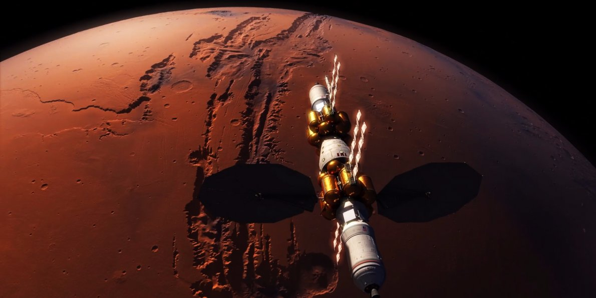

Крім технічних аспектів, необхідно враховувати психологічний вплив колонізації на людей. Довгий період ізоляції та обмежених ресурсів може вплинути на психічне здоров'я екіпажу. Дослідження в сфері психології та соціології важливі для створення програм та стратегій, що допоможуть забезпечити психологічний комфорт і взаємодію серед майбутніх марсіанських колонізаторів.
